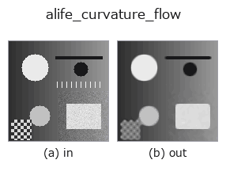

artificial-life op• 数据种类:image → image
• 调用:fullseye.apply(img, "alife_curvature_flow", a=0.5, b=0.5)(2-D 的模型是一张图 + 两个标量旋钮 a,b∈[0,1])

*图为在 128×128 合成输入上实际运行的输出。左为输入，右为输出(非图像的返回值直接显示其值)。*
平均曲率运动(mean-curvature motion)/水平集(level-set)平滑(曲线缩短流,curve-shortening flow)。
> 以下的详细说明为原文 —— 摘要与标题已翻译。
Integrates u_t = |grad u| * div(grad u / |grad u|) in the numerically stable
algebraic form
u_t = (u_xx u_y^2 - 2 u_x u_y u_xy + u_yy u_x^2) / (u_x^2 + u_y^2 + eps),
i.e. every level curve of the image moves along its normal at a speed equal
to its own curvature: small blobs and boundary wiggles vanish, straight edges
stay put. `a sets the number of steps 1 + int(29a), b` the time step
dt = 0.05 + 0.2b.
• gallery2d_physics_alife_3d 族使用指南
• 示例数据目录(下载 URL / 许可证) —— 2-D 用 skimage.data(BSD/公有领域)加合成图,3-D 给出真实数据源(Stanford/PDS 等)的下载 URL。
• 算子来历与参考文献 —— 该算子族所依据的研究/方法出处。
• 算法的正典(作者・年份)与用途见上面的族使用指南。
下面的程序已确认可以运行(与图相同的输入)。在 Studio 帮助中，此块会变成按钮，可当场加载并运行。
alife_curvature_flow 0.50 0.50
▸ Load this pipeline · Load & run
• gallery2d_physics_alife_3d — py -3.11 examples/gallery2d_physics_alife_3d.py
image 作为输入)identity · gaussian · mean_box · bilateral · unsharp · median · min_filter · max_filter
artificial-life)alife_gray_scott · alife_turing · alife_life_step · alife_cyclic_ca · alife_perona_malik · alife_dla · alife_reaction_bz · alife_wolfram1d
*Provenance: ops.py — 2D 算子登记表。本条目由 tools/opdocs.py md 自动生成(请勿手工编辑)。*
© 2026 Kazufumi Furuse — Fullseye operator documentation. Licensed under Apache-2.0.